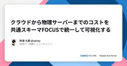

Pepabo Tech Portal
https://tech.pepabo.com/
GMOペパボのエンジニア・デザイナーによる技術情報のポータルサイト
フィード

igaigaさんによるDBモデリングワークショップを開催しました 26
26
Pepabo Tech Portal
はじめに2026年度に新卒エンジニアとして入社した、たてけんです。ペパボの開発では日々の業務でデータベースに触れる機会が多くあります。その土台となるDBモデリングを学ぶため、2026年度の新卒エンジニア研修では、igaigaさんをお招きし、特別講義を開催しました。当日は、DBモデリングの講義と、図書館の蔵書貸出管理を題材にした演習、そして「AI時代の（設計に関する）成長戦略」の講義という構成でした。この記事では、参加した新卒エンジニアそれぞれの視点から、当日の学びをお届けします。igaigaさんによる過去のワークショップの様子は、『DBモデリングとRSpecのワークショップを行いました』をあわせてご覧ください。はじめに講師紹介：igaiga（五十嵐邦明）さんなぜigaigaさんをお招きしたのか講義：DBモデリング 「誰が・何を」から名詞を洗い出す演習：図書館の蔵書貸出管理を設計する モデリングで一番悩んだ点みんなの発表を聞いて感じたこと講義：AI時代の（設計に関する）成長戦略 「遭遇率が上がる」＝成長チャンスAIが出した設計を「評価する」側へみんなの感想 keithkimatakeimaruのーらゆっきーしんおわりに講師紹介：igaiga（五十嵐邦明）さん講師を務めてくださったigaiga（五十嵐邦明）さんは、Ruby・Railsを専門とするエンジニアです。『パーフェクトRails』『Railsの教科書』『Railsの練習帳』など、多くのエンジニアが学びの入り口にしてきた著書を執筆されています。今回の講義や演習も、igaigaさんが公開されている『Railsの練習帳』のDBモデリング基礎講座をもとに進めていただきました。加えて、「AI時代の（設計に関する）成長戦略」と題した講義もしていただきました。なぜigaigaさんをお招きしたのか新卒エンジニア研修を担当した、はるおつです。ペパボの新卒エンジニア研修では、ここ数年igaigaさんにDBモデリングの特別講義をお願いしています。実際に動き、見た目がそれらしいものをすぐに作るということは、AIエージェントの台頭によってますます容易になっています。一方で数年先を見通したDBモデリングについては、今はまだ人間がAIと並走して適切に判断する力を求められている領域だと感じています。Railsチュートリアルを終えたばかりの新卒エ
2日前

クラウドから物理サーバーまでのコストを共通スキーマFOCUSで統一して可視化する 24
Pepabo Tech Portal
技術部データ基盤チームの@zaimyです。ペパボでは、クラウドや物理サーバーなど複数のプラットフォームにまたがるコストを社内ダッシュボードで可視化しています。このダッシュボードに供給するコストデータを、FinOps Foundation1が策定する共通仕様FOCUSに沿って正規化する層をdbtで構築しました。その結果、ダッシュボード側のSQLは約10分の1（数百行から数十行）に縮小し、新しいコストソースの追加が容易な定型作業になりました。FOCUSを実際のデータ基盤に適用した事例はまだ少ないようです。この記事では、コスト可視化をFinOpsの共通スキーマで統一したいデータエンジニアやSREの方に向けて、正規化層の設計判断と、共通スキーマに揃えたことで何が容易になったかを紹介します。ペパボのコスト可視化基盤課題はソースごとにバラバラなコストデータFOCUSとはFOCUSコスト層の設計 課金期間はソースのnativeな粒度のまま持つnative通貨を保持し、換算列を併設する組織固有の軸もx_拡張カラムに乗せるデータマートも請求の最小粒度を保持する新しいコストの追加が定型作業になった クラウド以外のコストも同じ受け皿に乗る共通スキーマの上に機能が積み上がる得られたものと工夫のまとめまとめペパボのコスト可視化基盤前提として、ペパボのコスト可視化の構成を簡単に紹介します。社内データ基盤「Bigfoot」に各プラットフォームのコストデータを収集し、dbtで変換してBigQueryのテーブルとして提供しています。可視化はCloud Run上のStreamlitで運用している社内ダッシュボード基盤が担っています。コスト用のダッシュボード（「Bigfootを使ったbillingの可視化」ということで社内では「Billingfoot」と呼んでいます）が、BigQueryのコストテーブルを参照する構成です。コストの発生源は従来8種類ありました。Google CloudやAWSなどのパブリッククラウド、社内で構築したプライベートクラウド、データセンターの物理サーバー、種々のSaaSやIaaSです。これらをひとつのダッシュボードで横断的に見ていました。課題はソースごとにバラバラなコストデータ問題は、これらのコストデータが「各ソースのAPIから取得した形のまま」BigQueryに置かれていたこ
2日前

みのるんさんによるRAG＆AIエージェント構築ハンズオンを開催しました 17
Pepabo Tech Portal
はじめに2026年度に新卒エンジニアとして入社した、たてけんです。ペパボの開発ではAIエージェントを日々の業務に取り入れることが当たり前になりつつあります。2026年度の新卒エンジニア研修では、みのるんさんをお招きし、特別講義とハンズオンを開催しました。当日は、生成AIの全体像をつかむ講義「AI最前線！AWSでLLMアプリ構築入門」と、Amazon Bedrock 上で RAG と AIエージェントを実際に組み立てるハンズオンという構成でした。この記事では、参加した新卒エンジニアそれぞれの視点から、当日の学びをお届けします。はじめに講師紹介：みのるん（御田稔）さんなぜみのるんさんをお招きしたのか講義：AI最前線！AWSでLLMアプリ構築入門 AIエージェントの「作り方」が変わったハンズオン：RAG＆AIエージェントを実際に組んだ まずはRAGを作ってみるAIエージェントを組み、触って学ぶみんなの感想 keithkimataしんmaruのーらゆっきーたてけんおわりに講師紹介：みのるん（御田稔）さん講師を務めてくださったみのるん（御田稔）さんは、KDDIアジャイル開発センター株式会社のテックエバンジェリストです。日本人初のAWS AI Hero・AWS Samurai に選出され、『Amazon Bedrock 生成AIアプリ開発入門』『やさしいMCP入門』などの著書でも知られています。AWSと生成AIの最前線を走る方に直接教えていただける、貴重な機会となりました。なぜみのるんさんをお招きしたのか新卒エンジニア研修を担当した、はるおつです。講義当日までの研修でRuby on Rails、データモデリング、インフラと仮想化、CI/CD、運用監視までの研修は終えていました。つまり、受講者はコードを書いて動かすためのスキルセットの基本は備わっている状態でした（研修の詳細は新卒エンジニア研修2026の記事をご覧ください）。社内では、「Claude Codeに住む」を掲げて、普段の業務をClaude Code経由で行うという取り組みがあります。それほど、AIが前提になって仕事をしている人が多く、「AIを使う」ということは十分にできていると言えます。一方で、RAGが何をしていて、AIエージェントがツールをどう選ぶのかは、使うだけでは見えにくいポイントです。それを自社のサービスに載せ
2日前
AIが生成したWebサイトの品質を数値化する — ルーブリック × LLM-as-a-Judge による評価駆動開発 36
Pepabo Tech Portal
はじめにこんにちは。ロリポップ・ムームードメイン事業部でエンジニアリングリードをしています kinosuke01 といいます。ここ数年で、AIでWebサイトを生成するケースが増えてきたと思います。ただ、その品質を評価するのは難しく、「なにかイマイチ」という感想は出てくるものの、具体的な改善点までは言葉にしづらいのではないでしょうか。この記事では、「ロリポップ！AIホームページ」（旧「ロリポップ！AIサイトエージェント」）というサービスで、AIが生成したWebサイトの品質をどう評価し、開発サイクルにどう組み込んだかを紹介します。関連して、2026年9月5日開催の Product Engineering Conference 2026 で 「作り直せるコードは迅速に、作り直せないDBは慎重に」 というセッションに登壇します。判断の不可逆性を基準に「やり直せる領域はAIを活用して走りながら考え、やり直しの効かない領域は慎重に設計する」という使い分けを話します。本記事で扱うのは、その「走りながら考える」側にあたる取り組みの1つです。前提：「ロリポップ！AIホームページ」について「ロリポップ！AIホームページ」は、AIがWebサイトを制作するサービスです。「カフェのサイトを作りたい」「フリーランスのポートフォリオが欲しい」といった指示から、ページ構成・デザインテーマ・コンテンツまでを一括で生成します。サイト制作フローを「ヒアリング → 構成設計 → デザイン選定 → コンテンツ生成」のステップに分解し、決定論的ワークフローで中核処理を組んでいます。AIの役割は「サイトを表す構造データ（JSON）を生成する」ことに限定し、描画はアプリケーションが担います。コードに関する知識がない層のユーザーを対象としているため、ユーザーがコードを修正する必要が生じないよう、AIにHTMLやCSSを直接書かせる設計は採用していません。技術スタックはNext.js、BullMQ（非同期ジョブキュー）、MySQL、生成モデルにはGoogle Cloud上のGeminiを使用しています。背景・課題「ロリポップ！AIホームページ」には、チャットボットやRAGとは異なる難しさがありました。チャットボットであれば回答の正誤で品質を判定できますが、Webサイトのデザインや構成に唯一の正解はありません。「余白が
6日前

t_wadaさんによる2026年度版TDDワークショップを開催しました
Pepabo Tech Portal
はじめに2026年度に新卒エンジニアとして入社しました、のーらです。ペパボでは、昨年に引き続き今年も日本の Test-Driven Development（TDD）の第一人者である t_wada さんをお招きして、TDD ワークショップを開催しました。今年の講義タイトルは「AI 時代の TDD」。午前は AI 時代における TDD についての講義、午後は”AI 禁止”のペアプログラミングで TDD を体験する二部構成で、午後のワークショップには10名が参加しました。研修後、参加者それぞれに感想を書いてもらいました。この記事では、その感想から浮かび上がった3つのテーマに沿って、当日の学びをお届けします。ペパボの TDD ワークショップは2021年から毎年開催しています。昨年の様子は『t_wada さんによる2025年度版 TDD ワークショップを開催しました』を、これまでの記事は TDD タグの一覧からご覧いただけます。はじめに研修概要 AI との開発スタイル認知負債レビューの役割の引っ越し「思考は外注できるが、理解は外注できない」 認知負債（Cognitive Debt）とはAI 活用が進むなかで感じていたモヤモヤ「なぜ今 TDD なのか」という問いへのヒントAI 禁止のペアプロ TDD なぜ AI を禁止したのかオーガニックコーディング手を動かして見えてきたことAI 禁止は本質ではない「コードレビューの役割の引っ越し」研修担当者より なぜ2026年に TDD 研修を行うのかみんなの感想 KeithkimatatatekenkeiShinmaruのーらsattonyukyanどすこいおわりに研修概要当日は午前に講義、午後にワークショップの二部構成でした。午前：講義「AI 時代の TDD」＋ 質疑応答午後：ペアプログラミング形式による TDD 実装課題（AI ツールの使用は禁止！）事前準備や TDD の基本的な流れは昨年と同様なので、詳しくは昨年の記事をご覧ください。ここでは、講義の要点を3つ紹介します。AI との開発スタイルAI との向き合い方の整理です。対話しながら一緒に開発するやり方（伴走）は、コントロールしやすい一方で人力なのでスケールしません。自走する AI に任せて並列開発するやり方（委託）は、圧倒的に速くスケールする一方で、人間によるコントロールや状況把
14日前
GMOペパボの開発体験や技術スタック 2026上期
Pepabo Tech Portal
こんにちは、技術広報のsennaです。GMOペパボで8年間広報を務め、この7月から技術広報を兼任することになりました。技術広報になったものの、これまでコーポレートやサービスの広報をメインで行っていたので、そもそもエンジニアのみんながどんなことを考えているか、どんな技術を使っているかもほとんど知識ゼロの状態・・・。なので、まずはエンジニアのみんなのことを知りたいと思い、全社エンジニアを対象に業務における開発体験や各自の技術スタックなどについて調査を実施しました。開発体験の満足度、使っている言語やツール、アウトプットの状況まで・・・GMOペパボのエンジニアのリアルをデータでお伝えします。サマリー7割以上が技術選定に十分満足！ツールや技術を自由に選べる環境自然言語でのコーディング、複数AIを活用するエンジニアも多数CI/CDやドキュメントに伸びしろがあるが、半数以上が概ね満足！開発体験の全体像業務とプライベートで最も差が大きいのはPython！業務vsプライベート言語ギャップ82%が社外に向けてアウトプット、2026年上期のアウトプット状況ツールや技術を自由に選べる環境みなさんは、開発体験という言葉を聞いたことがありますか？開発体験（Developer Experience／DX）とは開発者が業務を行う上で使用するツールや開発のプロセス、組織文化など環境全体を表す言葉です( • ̀ω•́ )✧。どや顔で説明していますが、私は最近知りました（おそらくエンジニアの方にとっては当たり前の言葉ですよね・・・）。最近知ったけど、仕事の時は10年前から知ってるような顔をして使っています( • ̀ω•́ )✧。開発体験なんてよければよいほどいいよね！と思ったのですが、私はエンジニアではないので実態を知らないわけです。なので、今回の調査で聞いてみました。果たして・・・その結果や如何に・・・！！！さて、今回の調査では、開発体験に関する7項目を4段階評価で評価してもらいました。技術選定の裁量は「ほぼない〜十分にある」、それ以外は「ほとんど満足していない〜十分に満足している」で評価してもらっています。※本記事ではペパボの職位制度に基づき、便宜上4等級以上をシニア、3等級以下をジュニアと表記しています。7項目のうち、「ツール・環境の自由度」と「技術選定の裁量」は突出して高い結果で、「十分に満足し
22日前
Agentic Engineering時代における「作り上げる力」を鍛える！2026年度新卒エンジニア研修を実施しました
Pepabo Tech Portal
はじめに新卒エンジニア研修を担当しました、ugo、yukyan、てつを、どすこい、haruotsuです！2026年度も新たな新卒エンジニアを迎え、講師陣一同で研修を実施しました。本記事では、各研修を設計・実施した講師陣が、カリキュラムの設計意図や工夫、実施の様子を紹介します。新卒エンジニア研修の設計に携わる方々の参考になれば幸いです。ぜひ最後までご覧ください。はじめに2026年度新卒エンジニア研修概要Webアプリケーション研修(バックエンド)フロントエンド研修モデリング/設計研修インフラ/仮想化研修SRE研修 障害対応100本ノックの概要設計意図効果セキュリティ研修 セキュリティレビュー体験脆弱性診断の体験機械学習＆データエンジニアリング研修おわりに2026年度新卒エンジニア研修概要今年の新卒エンジニア研修は「Agentic Engineering時代における作り上げる力」をテーマに、次の3つを目的として設計しました。自分が何を知らないかを知り、自律的に学び続けられる状態になる配属後すぐに事業インパクトを出せる助走をつけるAIを前提とした技術選定・判断・実装ができ、顧客体験まで考えられるようになるAIがコードを書いてくれる時代だからこそ、専門職としてのエンジニアとなることを重視しました。AIの出力の表面をなぞるのではなく、背後の技術体系を理解し実践していること。将来の事業価値に、開発がどのように結びつくのか議論できること。リリースした先の運用まで責任を持てること。AIが速く賢くなっても、説明責任と運用責任は人間が引き受けるものだと考えました。こうした狙いのもと、Webアプリケーション開発を足掛かりとしました。そのうえで、AIエージェントを用いた開発で重要となるもの、AIエージェントを組み込んだサービス開発で重要となるものを基準に、研修の単元を選定しました。各研修は次の順で実施しました。実施順 研修 日数 担当 1 Webアプリケーション研修(バックエンド) 5.5日 harachan、shiorin 2 フロントエンド研修 4日 nacal、てつを 3 モデリング/設計研修 3日 donokun、はらちゃん 4 インフラ/仮想化研修 9日 drumato、homirun、n01e0 5 SRE研修 5日 pochy、homirun 6 セキュリティ研修 2日 n01
1ヶ月前
ロリポップ！ゼロトラストリンクがLinuxとESP32に対応したのでStackChanで試してみる
Pepabo Tech Portal
人とAIを安全につなぐGMOペパボの新サービス「ロリポップ！ゼロトラストリンク」の、Linux版とESP32版クライアントを公開しました。これまでクライアントがあったのはmacOS、Windows、iOS、Androidで、どれも人が手で触る端末です。今回のLinux版とESP32版のリリースで、サーバとマイコンが加わりました。PCからサーバ、IoTデバイスまでこれまでのIoTのつなぎ方との違いStackChanに喋らせるESP32版の使い方 依存を追加する接続情報を用意するつなぐ通信するAIエージェントクラウドとつなぐおわりにPCからサーバ、IoTデバイスまでロリポップ！ゼロトラストリンク（以下、ZTL）は、離れた場所にある機器同士をポート公開なしで直接つなぐサービスです。参加した機器にはネットワーク内だけで通用するIPアドレスが振られ、そのアドレスで相手に届きます。Linux版はサーバやコンテナ用で、systemdで常駐させます。root権限もカーネルのTUNデバイスも使わないモードがあるので、権限を絞ったコンテナの中でも動かせます。ESP32版はESP-IDFのコンポーネントです。後述する通り、既存のファームウェアに依存を1つ足して関数を3つ呼ぶと、マイコン自身がネットワークに参加します。センサーやロボットにESP32が載ってさえいれば、開発機や本番サーバと対等に通信できます。なお、ESP32版は実験的な位置づけでのリリースです。これまでのIoTのつなぎ方との違いIoTデバイスとクラウドのやり取りには、向きが2つあります。デバイスがクラウドのサービスを呼ぶ向きと、外からデバイスへ指示を送る向きです。前者の定番は、クラウド側のサービスをインターネットへ公開し、デバイスに持たせたAPIキーで認証する構成です。世界中から届く窓口を開けておいて、キーの強さだけで守ることになります。後者は、NATの内側のデバイスに外から直接は届かないので、双方がMQTTのようなブローカーへ接続しておき、そこ経由で指示を押し込むのが定番です。どちらの向きでも、インターネットへの公開か、中継サービスの追加が要ります。ゼロトラストリンクではデバイス自身がネットワークに参加するので、どちらの向きもアドレス指定の直接通信になります。デバイスはNATの内側のまま、ネットワーク上の他のノードから届く
1ヶ月前
集約ジョブパターンで解決するモノレポCIのrequired check問題
Pepabo Tech Portal
こんにちは！ロリポップ・ムームードメイン事業部ムームードメイングループの中村(@litencatt）です。今回は、ムームードメインのモノレポで運用していたCIの統合ゲート（複数のCIの結果を1つの required check に集約する仕組み）を、GitHub Actionsネイティブの集約ジョブ方式に移行した話です。約500行のカスタムJavaScript + checks API + ポーリングで構成されていたプロキシ方式を廃止して、保守対象のコードは約335行に、障害モードは6種類まるごと消えました。集約ジョブ方式は GitHub Actions の標準機能のみで構成されており、GitHub.com / GHES（GitHub Enterprise Server）を問わず、どのランナー環境でも導入できます。TL;DRモノレポで paths: フィルタ付き CI を required check（マージ前に成功が必須のチェック）にすると、該当パスに変更がない PR で skipped のまま永久ブロックされる（GitHub の既知制約）これを解決するために checks API + ポーリングのプロキシを自前実装していたが、~500行のコードに6種の障害モードを抱える状態にneeds + if: always() の集約ジョブパターンに移行し、プラットフォームのネイティブ機能だけで required check 問題を解消既存 CI は workflow_call（再利用可能ワークフロー呼び出し）で再利用し、コードの重複なく移行移行時の注意点: concurrency group 衝突、workflow_run 非発火、check run 名の変化TL;DR背景：モノレポCIの「required check問題」CI統合ゲートの変遷 第0世代：個別CIをrequired checkに登録（〜2026年3月）第1世代：ポーリング方式のプロキシ（2026年3〜4月）第2世代：イベント駆動化（2026年6月）理想形の発見とPoC PoCで動作検証新アーキテクチャ：CI オーケストレータ 主要な設計決定実装で遭遇した落とし穴と解決 concurrency group 衝突問題workflow_run が発火しなくなる問題check run 名の変化変更検知の整合性移行
2ヶ月前
【レポート】毬藻企画とGMOペパボでWebアクセシビリティのイベントを開催しました！
Pepabo Tech Portal
この記事についてイベントの背景・概要当日の様子 アクセシビリティウォークスルー改善提案ディスカッションイベントを振り返ってさいごにこの記事についてGMOペパボのtarutaruです。2026年3月24日、アクセシビリティエキスパート集団である毬藻企画合同会社さんとの共催で、「【GMOペパボ・毬藻企画】スクリーンリーダーによる実践的アクセシビリティウォークスルー 〜SUZURI byGMOペパボ編〜」というイベントを開催しました。GMOペパボにとっては初めてのアクセシビリティイベント。この記事では、イベント当日の内容・様子など振り返っていきます。イベントの背景・概要GMOペパボでは、「人類のアウトプットを増やす」というミッションのもと、誰もが表現活動の機会を持てる世界を目指してアクセシビリティ推進にも取り組んでいます。ただ、組織としての浸透も各サービスの改善も、まだ「道半ば」というのが正直なところで、SUZURIもその例外ではありませんでした。そんな折に、SUZURIでグッズ販売をしてくださっている毬藻企画の森田さんからお声がけいただきました。お話を重ねるなかで、「SUZURIのアクセシビリティ改善に取り組むなら、まずは現状の課題を知るところから。せっかくならオープンにやってみるといいんじゃないか」と、今回のイベントをご提案いただきました。お話を受けて、弊社の事例を公開することが、アクセシビリティに取り組まれている方の学びや刺激になれば。そして、その外に向けた発信が巡り巡って社内のアクセシビリティ推進の後押しにもなれば。そんな期待もあって、今回共催という形でイベントを開催することにしました。本イベントは、弊社のサービス「SUZURI byGMOペパボ」に対して、アクセシビリティウォークスルーを実施いただくイベントとして開催されました。あまり聞き馴染みのないワードだと思いますが、アクセシビリティウォークスルーは、認知的ウォークスルー（初見のユーザーがUIを一手順ずつ操作していくプロセスを追体験し、つまずきを抽出する手法）とエキスパートレビューを組み合わせたもので、毬藻企画さんによる造語になります。当日は、全盲のエンジニアであるcatさん（野澤 幸男さん）をゲストとしてお招きし、SUZURIをスクリーンリーダー（NVDA）で操作しながらウォークスルーを実施いただきました。
3ヶ月前
GA 直後の Amazon S3 Files を SUZURI の本番 EKS に投入し コンテナイメージを 1/20 に圧縮した
Pepabo Tech Portal
はじめに課題：assets が コンテナイメージに焼き込まれる構造的問題 lens/lens2 が扱う assets とは移行前の状況S3 Files という選択肢 当初の候補: EFS + DataSync2026 年 4 月 7 日 GA: Amazon S3 Filesアーキテクチャ設計 移行後の全体像設計のポイント実装: lens2（Rust）で先行検証 EKS への S3 Files マウントPhase 2a: 動作確認（並列マウント）Phase 2b: ASSETS_DIR 切り替えPhase 2c: Dockerfile から assets を除外ハマりどころ: EFS CSI Driver を動かしてわかったこと 1. inline (Ephemeral) CSI volume は非対応2. accessModes: ReadOnlyMany が非対応3. volumeHandle に s3files: プレフィックスが必須4. mountOptions: [iam] の明示指定が必要5. controller SA と node SA に別々の IAM ロールが必要補足: S3 Files 障害時の挙動と監視計測結果 lens2（Rust）本番実測lens（JavaScript）本番実測S3 Files の読み取りレイテンシ（lens 本番実測）lens（JavaScript）へのロールアウト lens ならではの差異: 上書きマウント方式lens2 のノウハウがそのまま活きたまとめ 成果サマリS3 Files を選んでよかった点さいごにはじめにこんにちは、技術部技術基盤グループで SUZURI / minne / カラーミーショップなどのインフラをサービス横断で担当している shibatch です。SUZURI は、オリジナルグッズを手軽に作れる・購入できるサービスです。ユーザーがアップロードした画像とあらかじめ用意した商品テンプレート（assets）を合成して、Tシャツやマグカップの完成イメージを生成する「画像合成サービス」が中核を担っています。この処理を担うのが lens と lens2 という 2 つのサービスです。lens: JavaScript + ImageMagick 製の画像合成サービス（主力）lens2: Rust + Imag
4ヶ月前